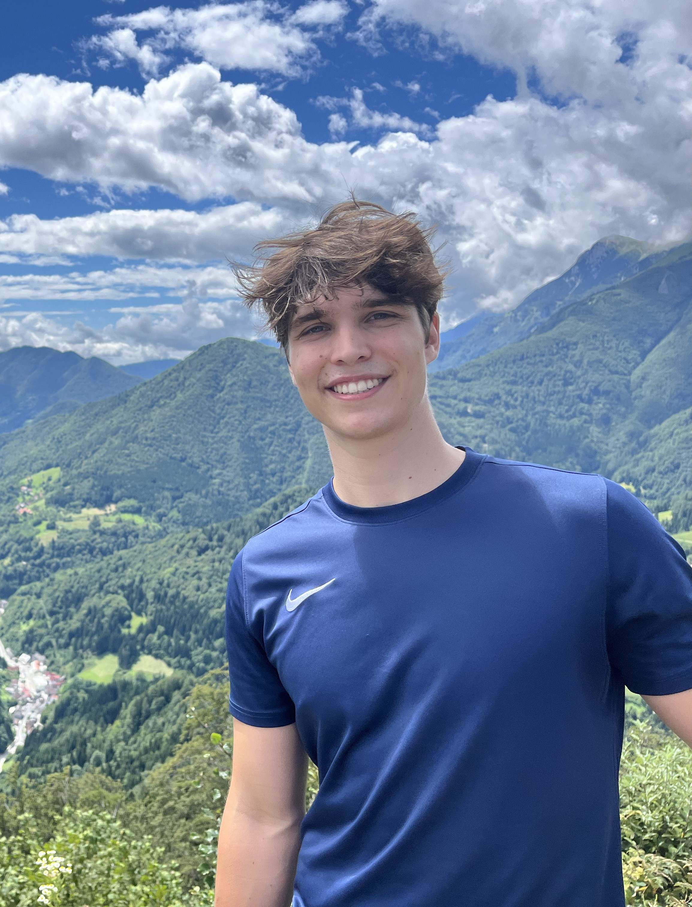
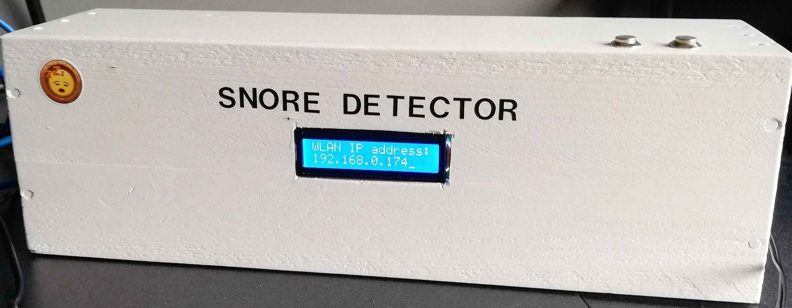
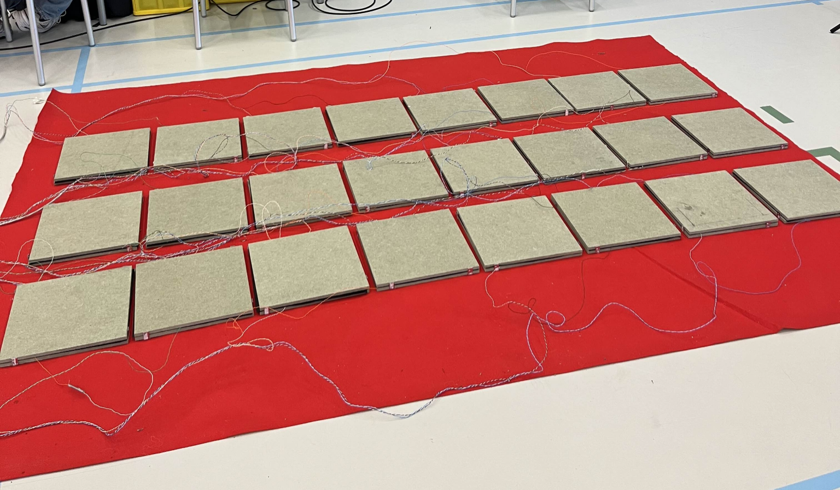
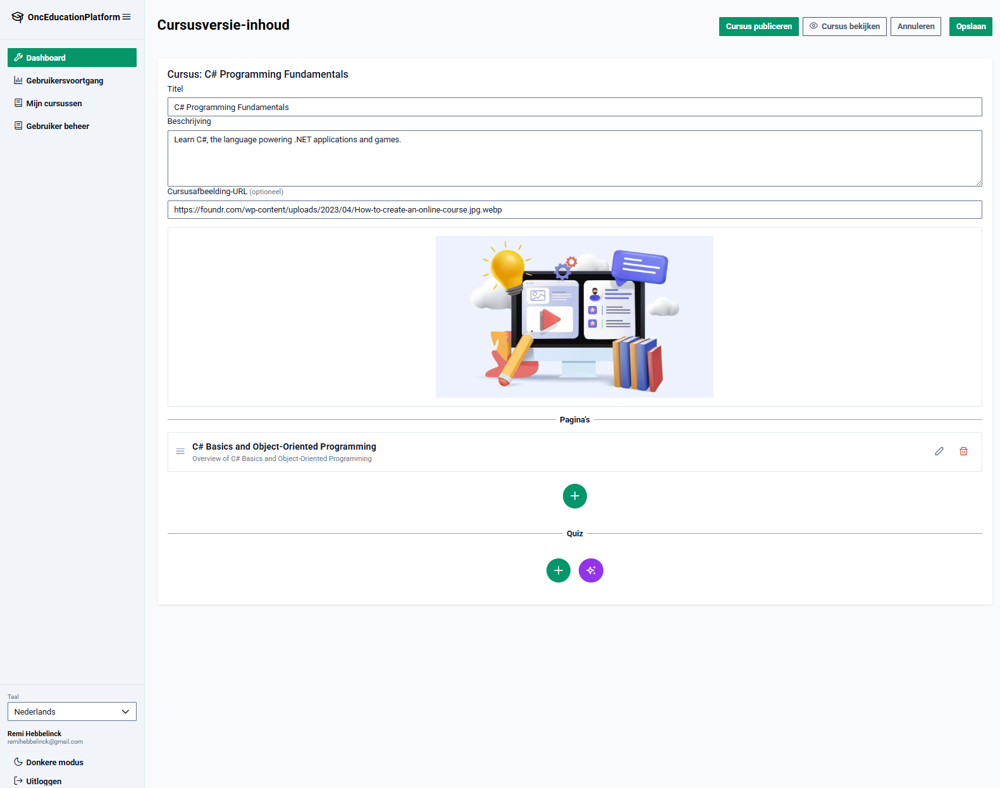

Mijn focus ligt op AI engineering — dataverwerking, automatisering en computer vision. Ik bouw systemen die ruwe data omzetten in bruikbare inzichten.

Ik studeer aan Howest in Kortrijk en bouw applicaties waarbij modellen echt iets doen — bewegingen detecteren, video's analyseren, content genereren.
Van MediaPipe-gebaseerde oefendetectie, VideoMAE-modellen die voetbalacties herkennen in matchvideo's, tot RAG-pipelines — mijn projecten draaien steeds rond hetzelfde idee: ruwe data omzetten naar bruikbare output via AI.
Van hardware-prototypes tot enterprise AI-platformen — elk project was een kans om iets nieuws te leren.

Een slaapmonitor gebaseerd op een Raspberry Pi die decibelniveaus meet en een alarm activeert bij overschrijding van een ingestelde drempel.

IoT-teamproject met 24 zelfgemaakte druksensoren die via Raspberry Pi en WebSockets real-time feedback geven in een spelwebapplicatie. Rol: Scrum Master.
Computer vision webapplicatie die via camera push-ups, pull-ups, dips en valpreventietests automatisch detecteert en telt. Gebouwd in samenwerking met IPitup.
Volledig lokaal draaiende AI-app die gepersonaliseerde maaltijdplannen genereert op basis van dieetvoorkeuren, allergieën en lichaamsgegevens — inclusief boodschappenlijst.
AI-systeem dat automatisch voetbalacties (corners, penalty's, doeltrappen) detecteert in volledige matchvideo's via fine-getuned VideoMAE-transformer.

Enterprise leerplatform waarbij beheerders AI-gegenereerde cursussen en quizzen aanmaken op basis van bestaande documenten. Stageproject bij OnCore als full-stack developer.